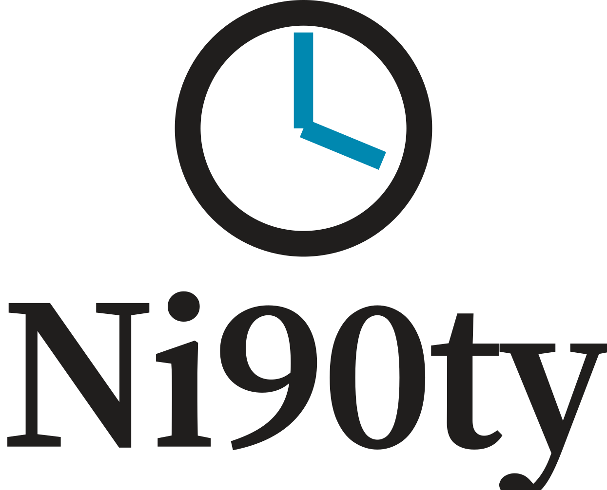
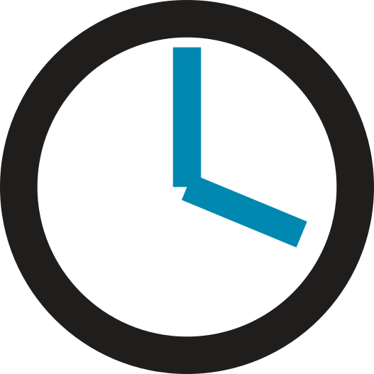
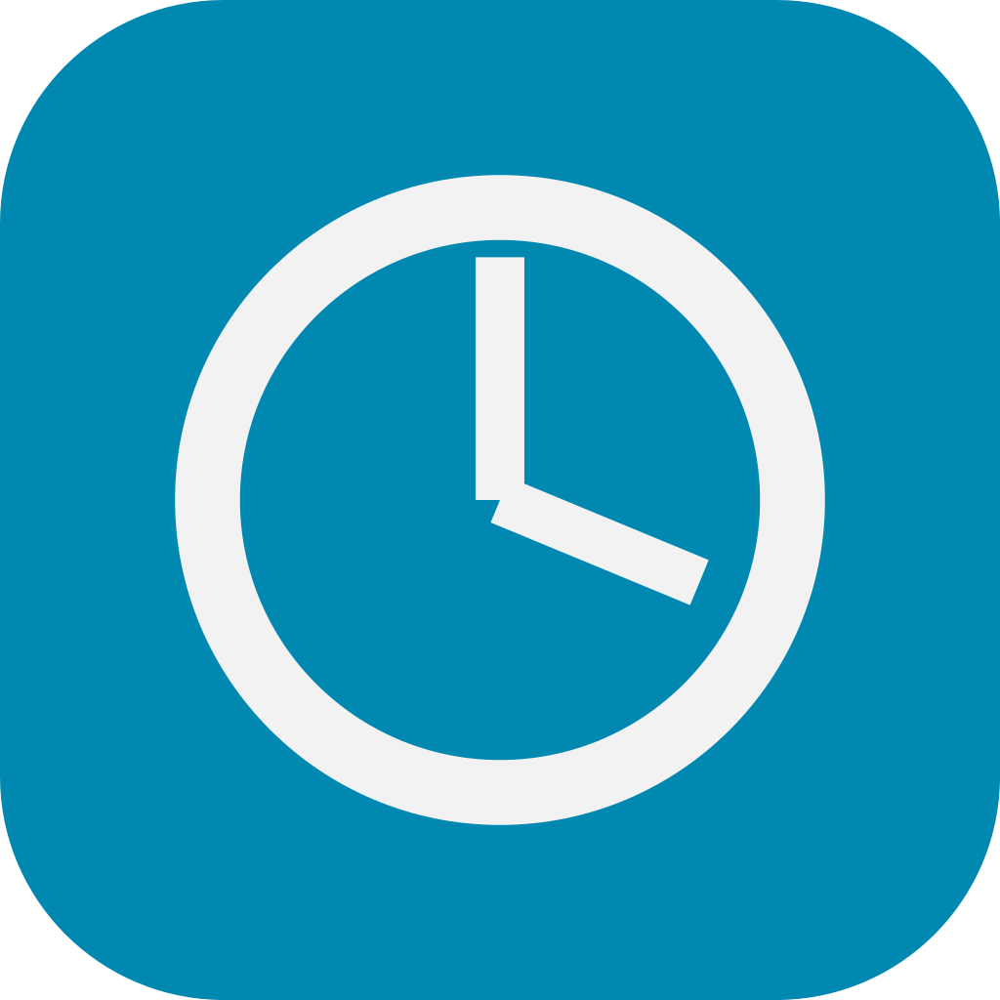

Brand and press
The mark, the ink and the type, with the artwork ready to use. The wordmark is artwork, not live text: please place the supplied files rather than setting the name yourself.
The mark
The zero is a dial.
The name is set as written, with the 90 inside it. The zero is replaced by a drawn dial, hands standing at ninety past. Nothing is added beside the word; the idea is cut into it.
The ring's stroke is one tenth of its outside diameter, and that diameter equals the wordmark's x-height plus one stroke, so the dial sits optically level with the 9 and the t. The two hands are three quarters of the ring stroke in weight and meet at the centre with no pivot dot. Both are cyan.
Give it clear space on all four sides equal to the dial's outside diameter. Nothing enters that space: no rule, no photograph edge, no second logo.
Lockups
Five versions, and no others.
{kind=link}
{kind=link}
One ink
Stamps, embroidery, invoices and fax-grade print. The hands drop to the text ink. Download SVG
{kind=link}

Stacked
Narrow spaces: courier bags, crate labels, an app splash. Dial above, name below. Download SVG
{kind=link}

Dial alone
Only where the name is already present or unambiguous: app icon, favicon, loading state, vehicle door, embroidery. Never as decoration on a page that also shows the full lockup. Download SVG
{kind=link}

App icons
Two tiles only: near-black for the buyer app, cyan for the terminal. A yard should never confuse the two on a shared device.
Ink
Paper, ink, and two spots.
Ninety-five percent of every surface is paper and text ink. Cyan is the only interactive colour and the colour of the clock. Magenta appears rarely, and never in the same small component as cyan.
| Ink | Value | Used for |
|---|---|---|
| Paper | #F3F2F2 | The default ground |
| Text ink | #201E1D | All body copy, rules and the ring |
| Cyan | #0088B0 | The clock, actions, live states |
| Magenta | #D6006C | Expiry, failure, the empty result |
Type
One family, Source Serif 4.
Headings, interface chrome, numbers and body copy are all set in Source Serif 4. There is no second face and no sans-serif for the interface. The serif is the chrome.
Flush left, ragged right, everywhere. Body measure caps at 70 characters, and there is no justified text and no centred paragraph. Times, prices and counters are set at display weight and size, larger than the copy around them — a countdown is never smaller than the label beside it.
The true italic marks the sentence that tells someone something did not happen. It is not used for emphasis inside a running paragraph.
Misuse
Six things that break it.
- Do not stretch, condense or re-letterspace the wordmark.
- Do not reset the name in another face. The wordmark is artwork, not live text.
- Do not recolour the dial or move the hands. Ninety past, cyan, always.
- Do not place it on a gradient, a busy photograph or a mid-tone.
- Do not add shadows, outlines, pills or containers of any kind.
- Do not lock the mark to a supplier, partner or courier name. The blind holds in the artwork too.
Artwork and queries: brand@ni90ty.com